Muzikál Aleše Kohouta
Inspirováno skutečným příběhem Karoliny Meineke,
utajované manželky anglického krále Viléma IV,
jejíž osud je spojen s Moravou.
Hannover. Londýn. Blansko. Tři města. Jeden mimořádný životní příběh.
Karolinu von Linsingen podle legendy spojovalo tajné manželství s britským princem, budoucím králem Vilémem IV. Její život provázely události, které dodnes působí téměř neuvěřitelně. Během těžké nemoci byla prohlášena za mrtvou a jen díky víře a péči mladého lékaře Adolfa Meineke unikla vlastnímu pohřbu. Poslední kapitola jejího života se odehrála na jižní Moravě. V Blansku našla nový domov a zde také v roce 1815 zemřela.
Muzikál Příběh utajené královny přináší její pozoruhodný osud vůbec poprvé na divadelní jeviště. Světová premiéra se uskuteční v Divadle na Orlí v Brně.
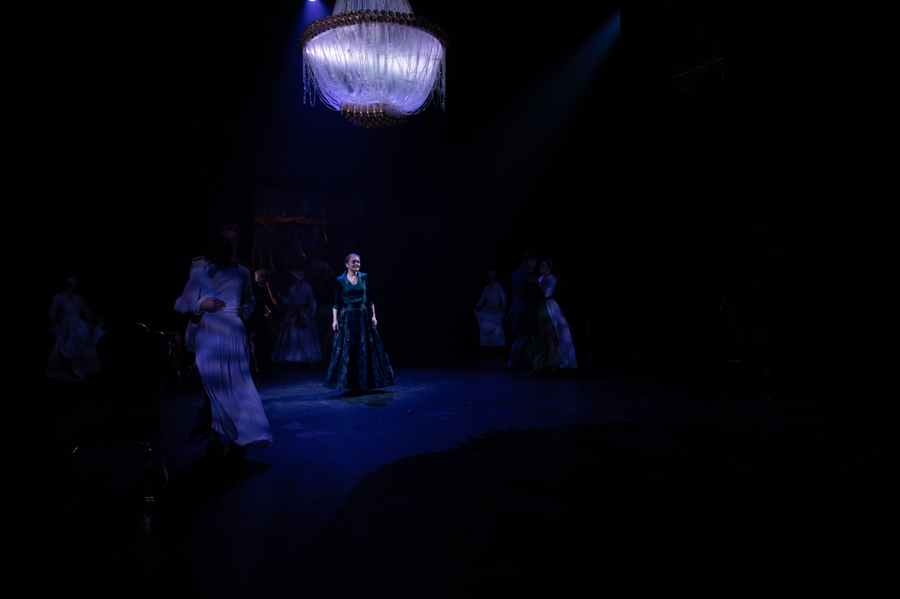
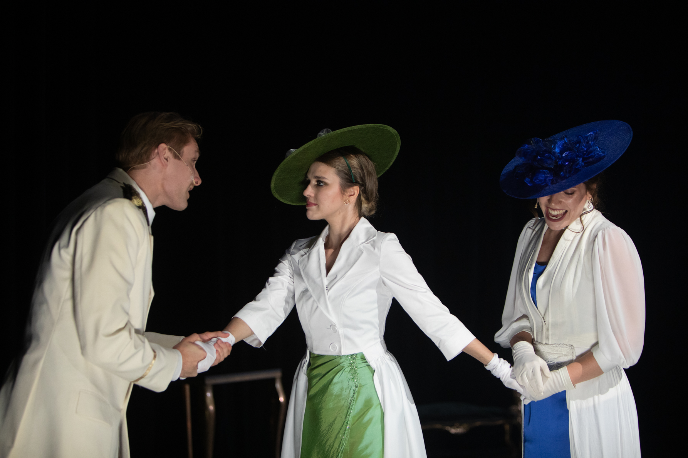
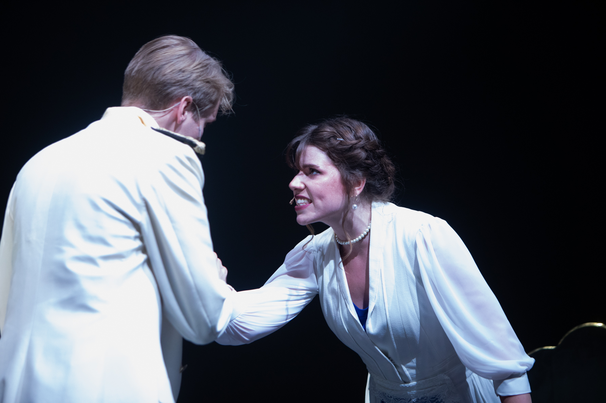
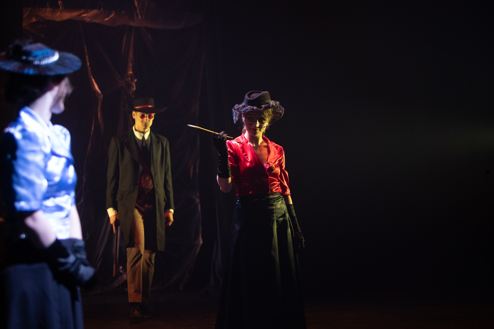
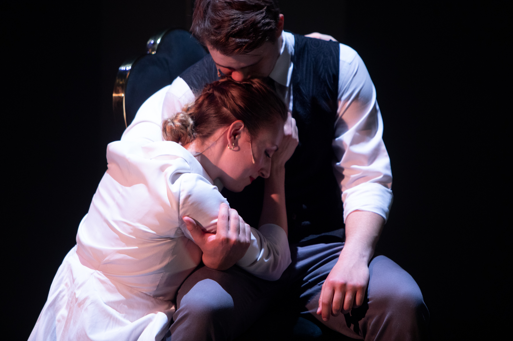
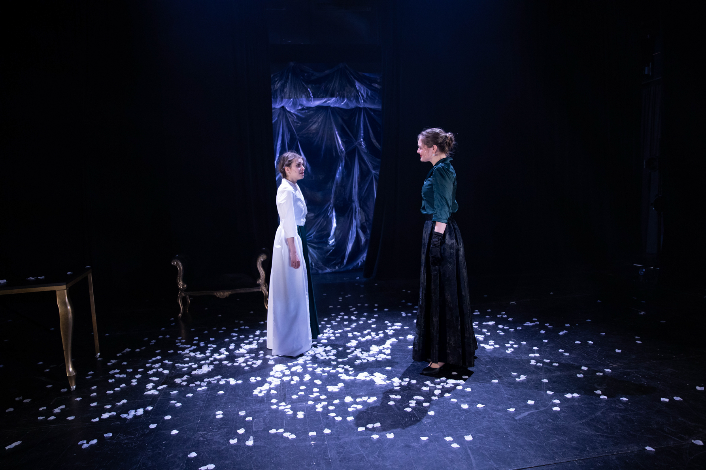
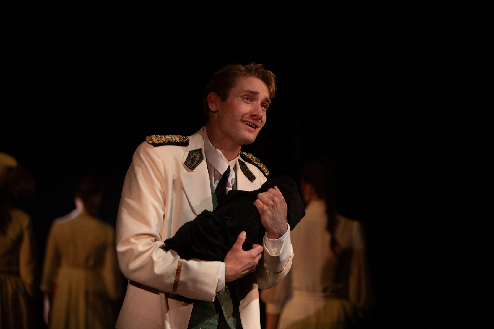
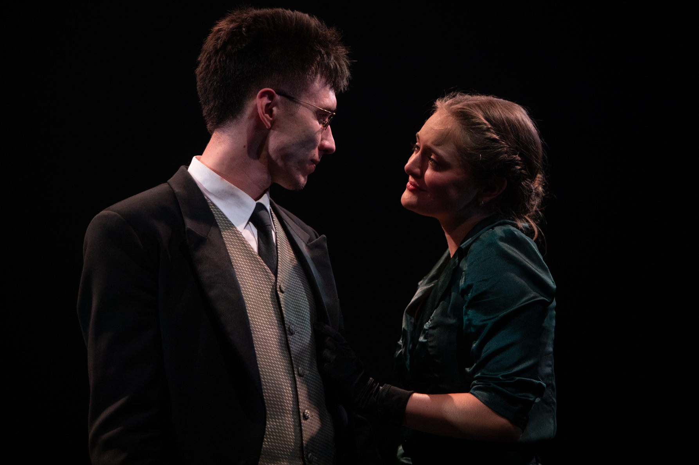
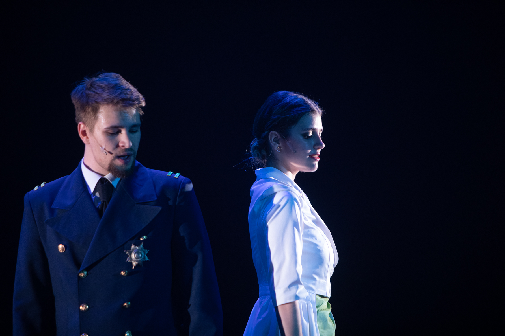
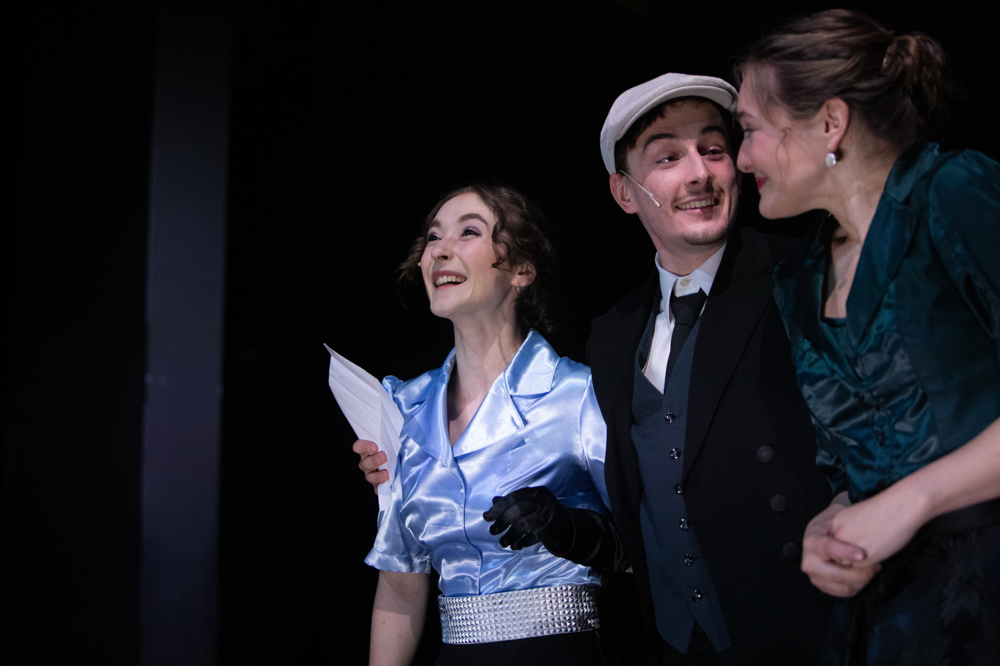
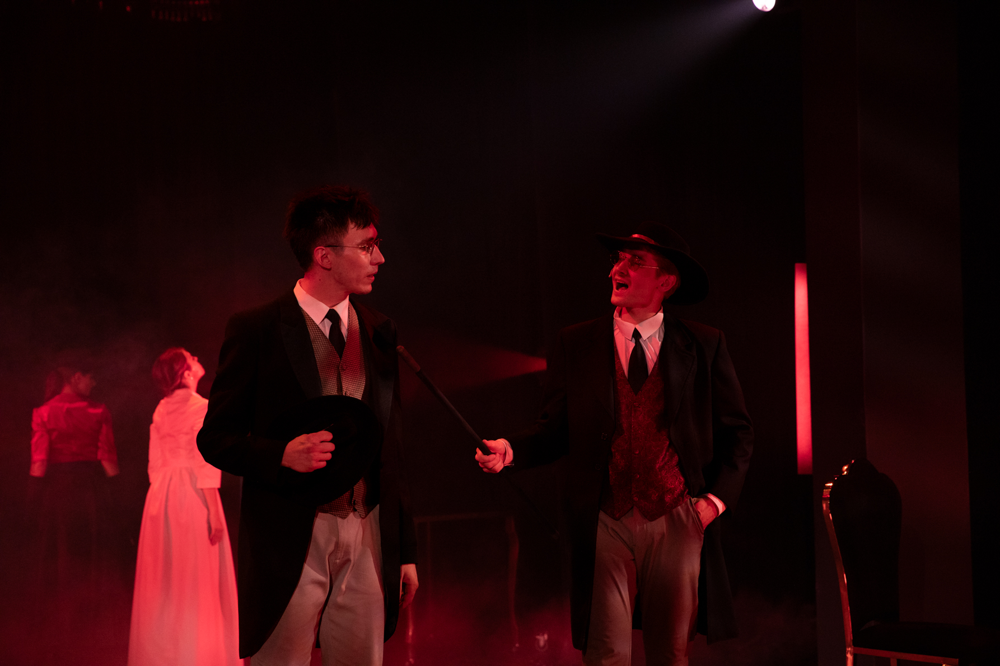
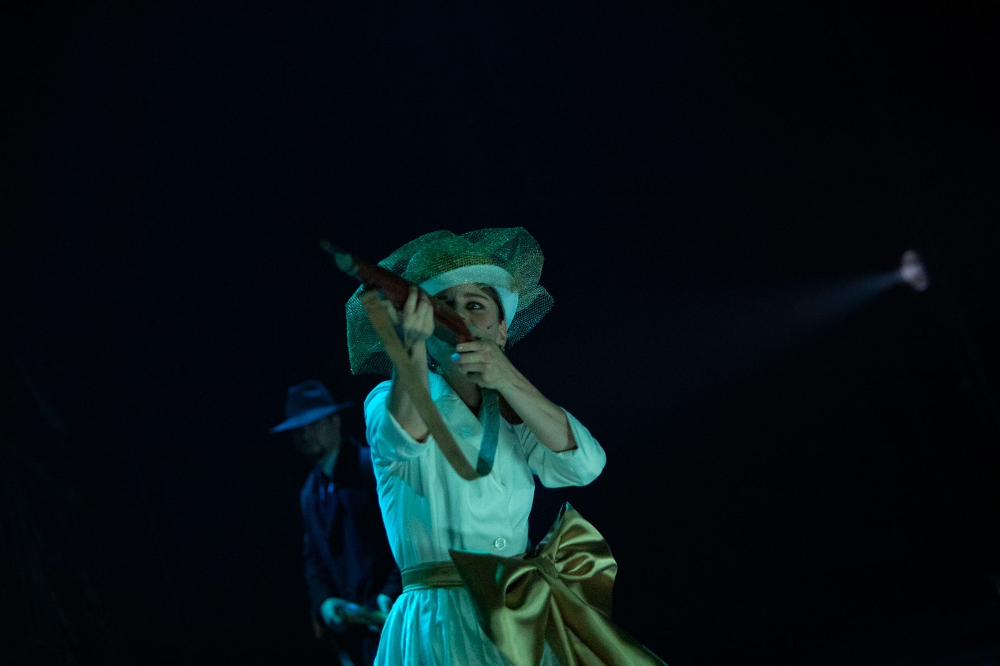
Příběh jako z červené knihovny, pro zúčastněné s nádechem hořkosti. V blanenském zámku skončil ve 46 letech život ženy, která měla být anglickou královnou.
Číst článek Seznam MédiumO tom, že Viktorie nemusela být královnou, se moc nemluví. A přesto se to mohlo stát, kdyby její strýc Vilém IV. nerozvedl.
Číst článek 100+1Pouhý rok se Karolina von Linsingen mohla zvát manželkou budoucího britského panovníka. Pak zasáhly společenské konvence.
Číst článek Žena-in.czOsud šlechtičny Karoliny Meineke, která část života prožila i v Blansku, tak trochu připomíná červenou knihovnu. Tedy alespoň zpočátku. Reálný příběh však postrádá pohádkový konec.
Číst článek